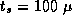
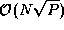
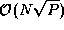

![[DBPP]](pictures//asm_color_tiny.gif)


![[Search]](pictures//search_motif.gif)
Performance models of the type developed in preceding sections are tools that we can use to explore and refine a parallel algorithm design. These models can be used without further refinement to perform qualitative analyses of performance. For example, from Equations 3.4 and 3.7 the following observations can be made about the finite difference algorithm:
 , and
, and  .
.
 .
.
 ,
,
 , and
, and  .
.
These observations provide interesting insights into algorithm characteristics. However, they are not a sufficient basis for making design tradeoffs. This task requires quantitative results, which in turn require that we substitute machine-specific numeric values for the various parameters in performance models. In general, we seek to obtain these numeric values by empirical studies, as will be discussed in Section 3.5. Once augmented with empirical data, models can be used to answer questions such as the following.
 and
and  ?
?
It is important to remember that performance models are idealizations of more complex phenomena. Once an algorithm has been implemented, we are able to validate our models and hence increase our confidence in their quality. However, in the early stages of a design we must necessarily be cautious, especially if we are making quantitative predictions or if the target computer has an architecture very different from the idealized multicomputer.
An important aspect of performance analysis is the study of how algorithm performance varies with parameters such as problem size, processor count, and message startup cost. In particular, we may evaluate the scalability of a parallel algorithm, that is, how effectively it can use an increased number of processors. One approach to quantifying scalability is to determine how execution time T and efficiency E vary with increasing processor count P for a fixed problem size and machine parameters. This fixed problem analysis allows us to answer questions such as, What is the fastest I can solve problem A on computer X ? and What is the greatest number of processors I can utilize if I want to maintain an efficiency of 50 percent? The latter question may be of interest if a computer is shared and there is a charge for each processor used.
It is important to consider both E and T when evaluating scalability. While E will generally decrease monotonically with P , T may actually increase if the performance model includes a term proportional to a positive power of P . In such cases, it may not be productive to use more than some maximum number of processors for a particular problem size and choice of machine parameters.
 .
. Scalability of Finite Difference:
Scalability of Finite Difference:
Figure 3.6 illustrates fixed problem analysis applied to the finite difference algorithm (Equations 3.4 and 3.7). This figure plots T and E as a function of P and N , using machine parameters characteristic of a relatively fine-grained multicomputer. The computation cost sec has been obtained by experiment, as will be described in Example 3.5. Recall that because the algorithm requires each task to have at least two grid columns, at most 64 processors can be used productively when N=128 and 256 processors when N=512 . Later in the chapter, we shall see how these predictions compare with observed performance.
Figure 3.6: Scalability of the 1-D decomposition finite difference
algorithm, as predicted by Equations 3.4 and 3.7 when sec,
sec, sec, and Z=10
: (a) execution time
as a function of P
; (b) efficiency as a function of P
.
Note that when N=128, only 64 processors can be used
productively.
Large parallel computers are frequently used not only to solve
fixed-size problems faster, but also to solve larger problems. This
observation encourages a different approach to the analysis of
algorithms called scaled problem
analysis, whereby we
consider not how E
varies with P
, but how the amount of
computation performed must scale with P
to keep
E
constant. This function of N
is called an
algorithm's isoefficiency function
and can provide valuable
insights into algorithm behavior. An algorithm with an isoefficiency
function of  is highly scalable, since the amount of
computation needs to increase only linearly with respect to P
to
keep efficiency constant. In contrast, an algorithm with a quadratic
or exponential isoefficiency function would be poorly scalable.
is highly scalable, since the amount of
computation needs to increase only linearly with respect to P
to
keep efficiency constant. In contrast, an algorithm with a quadratic
or exponential isoefficiency function would be poorly scalable.
Recall that efficiency E is defined as the ratio between execution time on a single processor and total execution time summed over P processors:
Hence, to maintain constant efficiency E , the following relation must hold for increasing P :
That is, uniprocessor time must increase at the same rate as total parallel time or, equivalently, the amount of essential computation must increase at the same rate as overheads due to replicated computation, communication, and idle time.
Scaled problem analysis does not make sense for all problems. Real-time constraints, for example in weather forecasting, may require that computation be completed in a fixed amount of time. In other applications, scaling is not possible because of physical constraints on problem size. For example, in molecular modeling, the number of atoms in a molecule is fixed, as is the number of pixels in image-processing applications.
 .
. Isoefficiency of Finite Difference Algorithms:
Isoefficiency of Finite Difference Algorithms:
We use isoefficiency analysis to examine the scalability of two
parallel finite difference algorithms. Recall that the efficiency of
an algorithm based on a 1-D decomposition of an  grid is given by Equation 3.7. For constant efficiency, a
function of P
, when substituted for N
, must satisfy the
following relation for increasing P
and constant E
:
grid is given by Equation 3.7. For constant efficiency, a
function of P
, when substituted for N
, must satisfy the
following relation for increasing P
and constant E
:
The function N=P
satisfies this requirement, and yields the
following relation, which is valid for all except small
P
, when the  term becomes significant:
term becomes significant:
Because the finite difference computation operates on a square grid,
scaling N
with P
causes the number of grid points and thus
the amount of computation to scale as . Hence, we say that the
isoefficiency function for this algorithm is  , meaning that
the amount of computation must increase as the square of the number of
processors in order for constant efficiency to be maintained.
Figure 3.7 illustrates why this is so.
, meaning that
the amount of computation must increase as the square of the number of
processors in order for constant efficiency to be maintained.
Figure 3.7 illustrates why this is so.
Figure 3.7: Scaling a finite difference algorithm based on a 1-D
decomposition. In (a), N=8
and P=2
. Each task has 32
grid points and must communicate with two neighbors. In (b),
P
is doubled while N
stays the same. Total computation costs stay
the same but communication costs double, so efficiency is reduced. In
(c), both P
and N
are doubled, thereby increasing both
computation costs and the  component of communication costs by a
factor of four; hence, efficiency remains the
same.
component of communication costs by a
factor of four; hence, efficiency remains the
same.
As a second example, consider a two-dimensional decomposition of the finite difference problem. Here, each task is responsible for points and must exchange points with each of four neighbors at each time step. Hence,
For constant efficiency, a function of P , when substituted for N , must satisfy the following relation for increasing P :
The function meets this requirement and gives the following relation which is valid for all values of P :
Because total computation is again proportional to  , the
isoefficiency function is
, the
isoefficiency function is  . This analysis shows that a 2-D
decomposition is more scalable than a 1-D decomposition.
. This analysis shows that a 2-D
decomposition is more scalable than a 1-D decomposition.
This example illustrates a general rule: Higher-dimensional
decompositions tend to be more efficient than lower-dimensional
decompositions. To understand why, consider Equations 3.7
and 3.8. While the 2-D decomposition sends slightly more
messages (four instead of two), data volume is reduced by a factor of
 , from to . Total communication
costs are reduced unless P
and N
are small or
, from to . Total communication
costs are reduced unless P
and N
are small or  is
much larger than
is
much larger than  .
.
If scalability analysis suggests that performance is poor on problem sizes and computers of interest, we can use models to identify likely sources of inefficiency and hence areas in which an algorithm can be improved.
Poor performance may be due to excessive replicated computation, idle time, message startups, data transfer costs, or some combination of these factors. An important first step when attempting to improve an algorithm is to identify which of these factors is dominant. We can do this by computing an expected execution profile for the algorithm, indicating the contributions of these different factors to execution time as a function of N and/or P . This approach is illustrated in Figure 3.8 for the 1-D finite difference algorithm. The model predicts that when this algorithm is executed on a multicomputer with a single vertical layer ( Z=1 ), data transfer costs dominate execution time when P is large; message startup costs are also significant. If the number of vertical levels is increased, message startup costs become negligible, and overall efficiency improves.

Figure 3.8: Contributions of computation, message startup, and message
transfer costs to total execution time in the 1-D finite difference
algorithm, for N=512
, Z=1
,  sec,
sec,
sec,
sec,  sec, and varying P
. There is no
replicated computation or idle time in this
example.
sec, and varying P
. There is no
replicated computation or idle time in this
example.
Cost information of this sort can be used to guide a redesign of an algorithm. Often, it may motivate us to reconsider decisions made earlier in the design process. For example, if replicated computation is reducing performance, then we may wish to reconsider an alternative algorithm, previously discarded, that avoids replicated computation at the expense of increased communication. Alternatively, high message startup costs may suggest further agglomeration so as to increase granularity. Similarly, if data transfer costs are high, we may seek to replicate computation or send more, smaller messages if doing so can reduce the total volume of data transferred.
© Copyright 1995 by Ian Foster